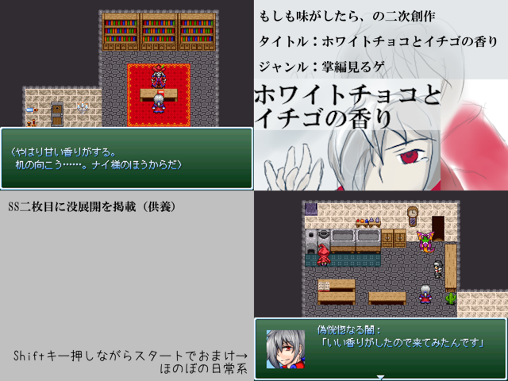

| No.29 ホワイトチョコとイチゴの香り | |
|
 | |
| 作成ツクール：RPGツクール2000 | |
| ジャンル：掌編見るゲ | |
| 作者名：りてぃ | |
| ＜配信/動画投稿/翻訳＞ | |
|
＜作者のコメント＞ もしもコレクション9に収録されている「もしも味がしたら」から影響を受けた、掌編の二次創作です。 ナイ軍の面々の味を引用しました。 アンデッドナイを味わう夢小説だったものです。 キャラの湿度がちょっと高いです。 偽惚に主人公を代行してもらって、先代の話とか出して、ほんのりシリアス風味になりました。 絵もツクールも初心者なので粗があるかと思いますが、雰囲気を味わっていただければありがたいです。 | |
管理人から 偽惚主人公はめずらしいですね。恍惚族はなんだかんだ湿度が高い印象なのですごく腑に落ちる内容になりそうな予感です！ 偽惚主人公はめずらしいですね。恍惚族はなんだかんだ湿度が高い印象なのですごく腑に落ちる内容になりそうな予感です！ |
|
| ダウンロード(2.1mb) 感想掲示板 | |
| 前の作品 次の作品 / TOPへ戻る | |